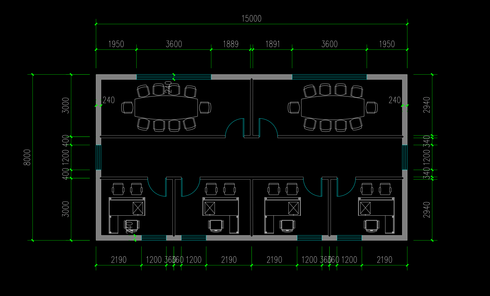
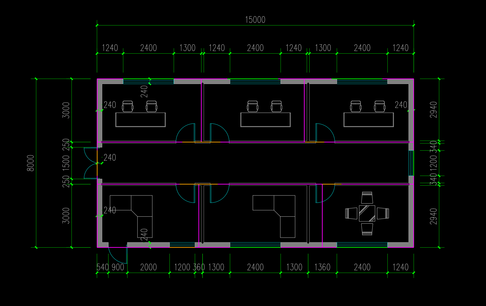

本次模型调用未正常完成。171 秒后订阅额度耗尽，系统保留最后保存的候选，模型尚未选定最终答案。14 个空间 · 14 扇窗 · 14 个门洞；几何自洽通过，原图保真未通过。
本次从上一份保存方案恢复，只改了二层四个门的位置和说明。没有使用原图叠图、开口回查或显式交付工具；一层漏窗、外门错位与明显隔墙偏差仍在。二层门端点也尚未获得可靠量测支持。
打开保存的候选 · 原生产交付页 · 独立分区/窗对照 · 二层门位复核 · 运行与限制 · 源 BIM
模型修改了四个办公室门的坐标；可见连接合理，端点尚未核实。查看器中的平面位置是本次实际保存结果。

以下来自开发助手指定原图锚点的 run06 离线诊断。一层几何在本次未变；这张图没有提供给生成模型，不是在线工具使用成绩。
